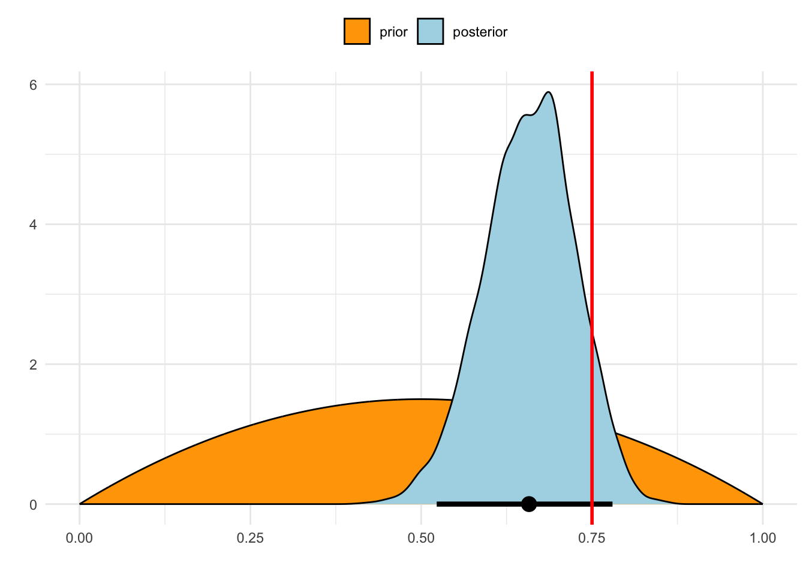

###
# Single parameter examples
###
set.seed(1031)
library(ggplot2)
library(bayesplot)
library(rstan)
###
# First for a binomial value ######
###
# \- simulate the data ---------
p = 0.75
num_cases = 50
bites = rbinom(num_cases,1,p)Single Parameter Estimation
Zombie bites - Estimating a binomial probability
Uh oh! You just got bit by a zombie. What’s the probability that you will now become a zombie too? Everyone knows that zombies are pretty infectious but maybe you were able to skirt by…
Let’s simuate data for a vector of zombie bites. Let’s say that if a zombie bites you, there’s a 75% probability you’d get infected. We can simulate 25 events of zombie bites to observe our data from:
It’s worth noting that our simulated data shows a different simulated value than our true probability - which will influence our posterior estimates!
We have to specify our model to be able to construct it into stan code. We are going to use a bernoulli distribution as our data model (we think that zombie infection following a bite will occur with some probability (\(\theta\)) according to a bernoulli distirubiton). Note this also could be done with the binomial distribution…
We have to then model our prior belief about the infection probability. Since we simluated the data, we actually do know the true parameter value, but we pretend to learn. So let’s say you are pretty optimisitic and think it may only be a 50/50 chance that infection occurs after a bite, but you’re not too sure. We can then model our prior distribution as a beta(2,2), which is loosely centered around 0.5, but not too strong in it.
So our model looks like this:
\[ \begin{align} Data \ Model \ &\{ \ y_i \sim bernoulli(\theta) \\ Parameter \ Model \ &\{ \theta \sim beta(2,2) \end{align} \]
// This is saved as a .stan file
data {
int<lower=0> n; // Number of trials
array[n] int<lower=0, upper=1> y; // Observed outcomes (0 or 1)
}
parameters {
real<lower=0, upper=1> p; // Probability of success
}
model {
// Prior:
p ~ beta(2, 2);
y ~ bernoulli(p);
}We call the stan code in R to run the model:
# \- Set up data for stan
bite_data <- list(
n = num_cases,
y = bites
)
zombie_fit <- stan('./stan/ex01_single-param.stan', 'zombie-mod', data = bite_data, iter = 3000, warmup = 1000)Inference for Stan model: zombie-mod.
4 chains, each with iter=3000; warmup=1000; thin=1;
post-warmup draws per chain=2000, total post-warmup draws=8000.
mean se_mean sd 2.5% 25% 50% 75% 97.5% n_eff Rhat
p 0.66 0.00 0.07 0.52 0.61 0.66 0.70 0.78 2481 1
lp__ -33.32 0.01 0.73 -35.33 -33.49 -33.03 -32.85 -32.80 3864 1
Samples were drawn using NUTS(diag_e) at Mon Oct 28 19:58:08 2024.
For each parameter, n_eff is a crude measure of effective sample size,
and Rhat is the potential scale reduction factor on split chains (at
convergence, Rhat=1).The text which follows our model output gives us a lot of useful information both to the posterior values and model convergence diagnostics.
We can also visualize the distribution estimated by the posterior value. I’ve added a vertical red line for the true value, but in most real cases, you don’t know the “true” value.
# get posterior for the estimates of p
zombie_p_post <- rstan::extract(zombie_fit)$p
posterior_param_plot(zombie_p_post, dbeta, seq(0,1,length.out = 1000), p, shape1 = 2, shape2 = 2)
The posterior high-density interval captures the true value. However, it is worth noting that our data was simulated, and did not reflect the true value that closely (0.66 versus 0.75)
For fun, I’ll add a frequentist comparison:
prop.test(x = sum(bites), n = length(bites))
1-sample proportions test with continuity correction
data: sum(bites) out of length(bites), null probability 0.5
X-squared = 4.5, df = 1, p-value = 0.03389
alternative hypothesis: true p is not equal to 0.5
95 percent confidence interval:
0.5114459 0.7840536
sample estimates:
p
0.66 We could use this approach to say: “we are 95% confident that the true value is between 0.51 and 0.78.”. Or you could talk about the p-value and say our observed propotion of bite cases is significantly different from 0.5.
So in this case, it is not really that different than our Bayesian analysis, just a philosophical difference in the way we interpret the underlying process.
Werewolf weights - Estimating a mean value
I’ve googled around and found that werewolfs are up to 180kg. Let’s simulate some data to reflect this.
Given the fact they are up to 180kg, let’s assume they are average 140 with a standard deviation of 15kg - a pretty big range!
Yeti vs Bigfoot - comparing two groups
Let’s say we had a debate about who was bigger - Yeti or Bigfoot.
After googling and reading some strange websites, I’ve found that Well, I can simulate some data to